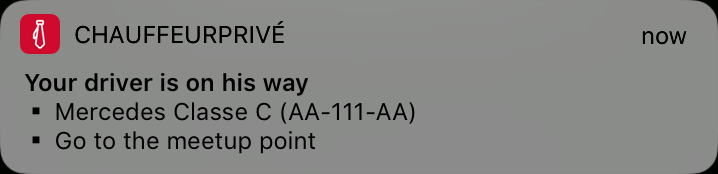

Go Templates
Louis Ledey - Chauffeur Privé
Contexte
SMS transationnels
Problème ?
💸
Le but
✨ Push ✨
Votre chauffeur arrive
Your driver is coming
|  |  |
Templates
package "text/template"
- data-driven templates for generating textual output
- executed by applying them to a data structure
- a template may be executed safely in parallel
La base
« Votre chauffeur Patrick arrive dans 2 minutes. »
type Substitutions struct {
DriverName string
ETA int
}
func main() {
tmpl := template.New("")
tmpl.Parse("Votre chauffeur {{.DriverName}} arrive dans {{.ETA}} minutes.")
tmpl.Execute(os.Stdout, &Substitutions{"Patrick", 2})
}
Votre chauffeur Patrick arrive dans 2 minutes.
Conditions
« Votre chauffeur Patrick arrive prochainement. »
« Votre chauffeur Patrick arrive dans 2 minutes. »
type Substitutions struct {
DriverName string
ETA int
}
func main() {
tmpl := template.New("")
tmpl, _ = tmpl.Parse("Votre chauffeur {{.DriverName}} arrive {{if gt .ETA 0}}dans {{.ETA}} minutes{{else}}prochainement{{end}}.")
tmpl.Execute(os.Stdout, &Substitutions{"Patrick", 2})
tmpl.Execute(os.Stdout, &Substitutions{"Georges", 0})
}
Votre chauffeur Patrick arrive dans 2 minutes.
Votre chauffeur Georges arrive prochainement.
Sous templates
type Substitutions struct {
DriverName string
ETA int
}
func main() {
tmpl := template.New("")
tmpl.New("driver_en_route.eta").
Parse("{{if gt .ETA 0}}dans {{.ETA}} minutes{{else}}prochainement{{end}}")
tmpl, _ = tmpl.Parse(`Votre chauffeur {{.DriverName}} arrive {{template "driver_en_route.eta" .}}.`)
tmpl.Execute(os.Stdout, &Substitutions{"Patrick", 2})
tmpl.Execute(os.Stdout, &Substitutions{"Georges", 0})
}
Votre chauffeur Patrick arrive dans 2 minutes.
Votre chauffeur Georges arrive prochainement.
Dot
tmpl.Parse(`Votre chauffeur {{.DriverName}} arrive {{template "driver_en_route.eta" .}}.`)
type Assistant struct {
IsAssistant bool
RiderName string
}
type Substitutions struct {
DriverName string
Assistant Assistant
}
func main() {
tmpl := template.New("")
tmpl.New("assistant").Parse("{{if eq .IsAssistant true}}[SMS envoyé à {{.RiderName}}] {{end}}")
tmpl.New("driver_en_route").Parse(`Votre chauffeur {{.DriverName}} arrive prochainement.`)
tmpl, _ = tmpl.Parse(`{{template "assistant" .Assistant}}{{template "driver_en_route" .}}`)
tmpl.Execute(os.Stdout, &Substitutions{"Patrick", Assistant{}})
tmpl.Execute(os.Stdout, &Substitutions{"Patrick", Assistant{true, "Georges"}})
}
Votre chauffeur Patrick arrive prochainement.
[SMS envoyé à Georges] Votre chauffeur Patrick arrive prochainement.